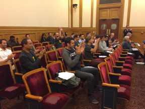
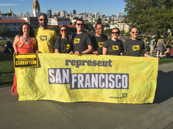

Represent Us San Francisco
fixing congress by outlawing corruption
Current Work
SF Democracy Vouchers
Bring Seattle democracy vouchers to San Francisco. Learn More →
Past Wins

2016 Prop T - Lobbyist Gift Ban
Banned lobbyist campaign contributions, lobbyist bundling of campaign contributions, and lobbyists paying for travel of elected officials.

2015 Prop C - Expenditure Lobbyists
Expanded definition of lobbyists to include those making “independent expenditures” or “IEs” aka all the “independent” groups working to get a candidate elected, but “not coordinating” directly with the candidate (therefore defined as independent), by spending lots of money on things like slate mailers, ads, etc
Original content Creative Commons licensed. Attributions listed on github.